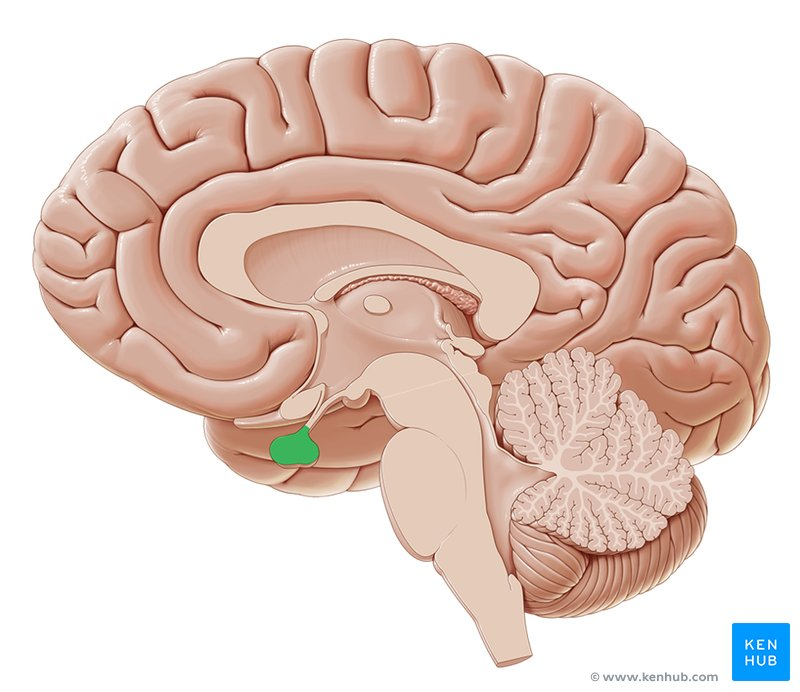
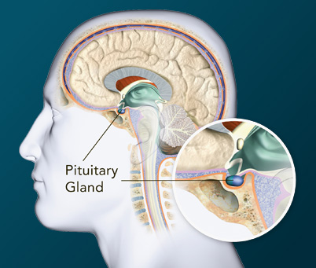
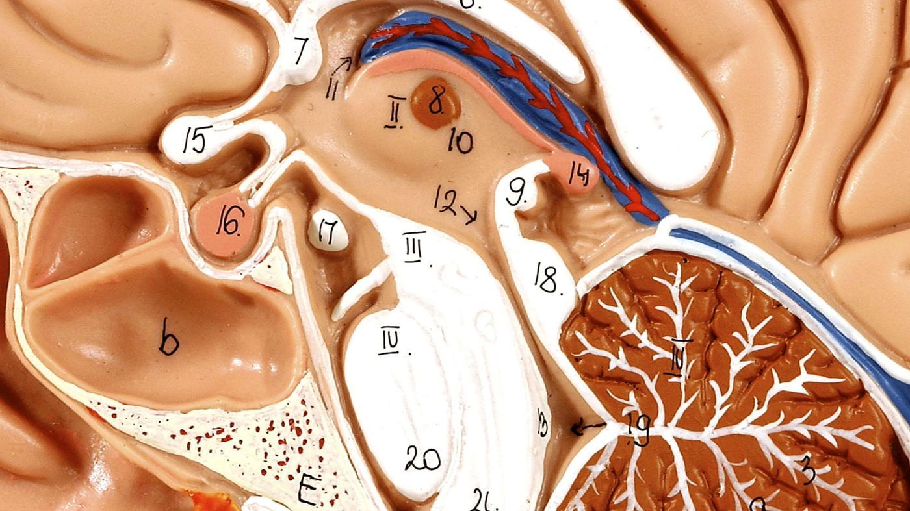
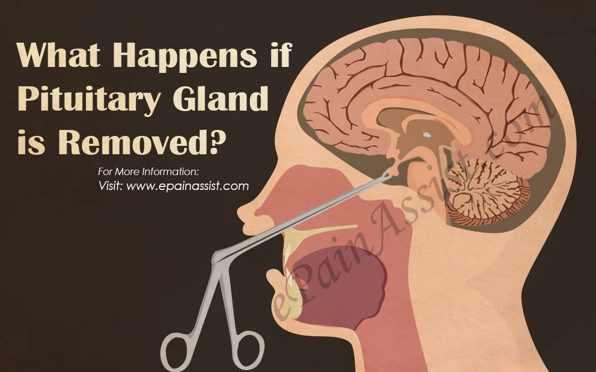

Pituitary Gland: Anatomy, Function, and Treatment

Pituitary Gland - Dr Howard Zeimer

Pituitary Gland | Hormone Health Network

(PDF) Nonfunctioning pituitary macroadenoma: A case report ...

Pituitary Tumors - familydoctor.org

What is the function of the pituitary gland? + Example

Endocrine vs Exocrine Gland: Defintion, Functions and Differences

Adrenal Fatigue: the truth you haven't heard | Gwen's Nest

What is the Anterior Pituitary? (with pictures)

12 Ways You Can Keep Your Pituitary Gland Healthy

Pituitary gland - definition — Neuroscientifically Challenged
- 
Pituitary gland: Anatomy and function of the hypophysis | Kenhub
- 
What is the Pituitary Gland? | How the Pituitary Gland Works & Functions
- 
What Are Some Facts About the Pituitary Gland? | Reference.com
Pituitary: What is it? Structure, Lobes, Function and Associated ...
- 
What Happens if Pituitary Gland is Removed?